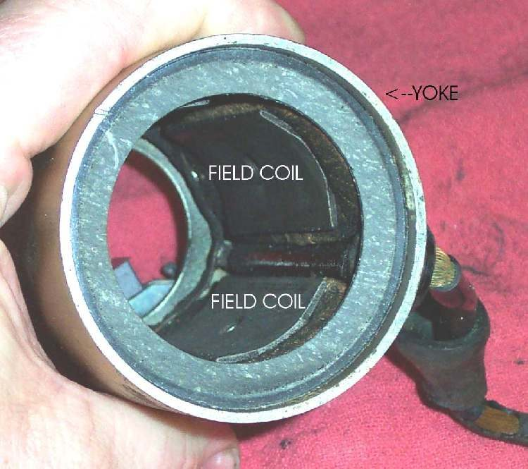

The starter motor is a small electric motor bolted to the engine cases, usually low at the front or behind the cylinder. A thick cable runs to it from the starter relay. Its gear drives the engine through reduction gears and the starter clutch.
What it does
When you press the start button, the relay sends battery current to the motor. It spins fast and turns the engine through the gears until the engine fires. Inside, carbon brushes rub on a copper commutator. Brushes wear shorter, the commutator gets dirty, and water or oil gets inside. The motor draws a very high current, so a weak battery or poor cable shows up here first.
Signs it is worn or failing
- Nothing happens when I press the starter button.
- Relay clicks but the engine does not turn.
- Engine turns over slowly.
- Grinding or screeching when starting.
- Starter whirs but the engine does not turn: usually the starter clutch, not the motor.
When to replace it
When brushes are below the limit and new ones are not sold, the armature is shorted, or the motor will not run on a direct, fused supply with a good battery. Check battery, cables, earth and relay first. Brushes can often be replaced.
What to match when buying
- Match make, model and year, or the part number: gear teeth, shaft length, mounting flange and terminal.
- Brush kits must match the brush size and holder.
- Cheap motors may have weak magnets and draw more current. Compare weight and finish with the old one.
- Brushes and their springs are sold as a set: Starter motor brushes.
Fitting notes
- Disconnect the battery negative first; the starter cable is always live.
- Workshop job for the internals: Remove and inspect the starter motor. Home test first: Test the starter circuit.
- Oil the O-ring, seat the motor fully, and fit the earth path clean.
Reference (K-Light 125)
| Item | Value | PDF page |
|---|---|---|
| Brush length | standard 12.5 mm, limit 8.5 mm | 91 |
| Mounting bolts | 10 to 12 N·m | 92 |